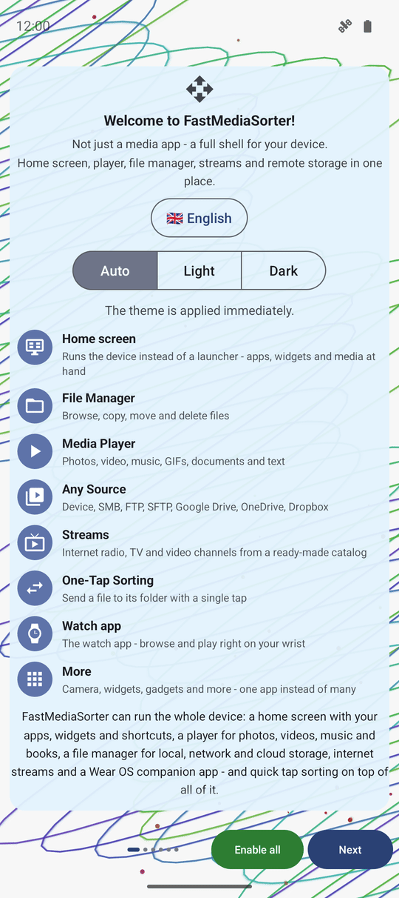
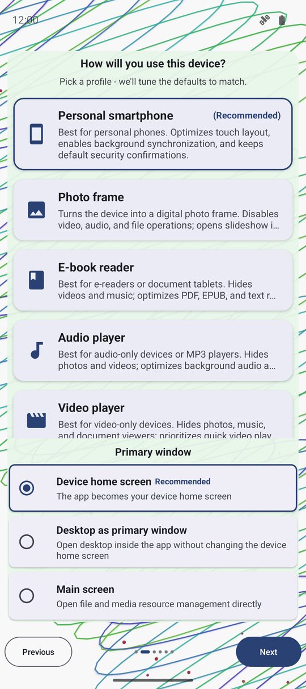
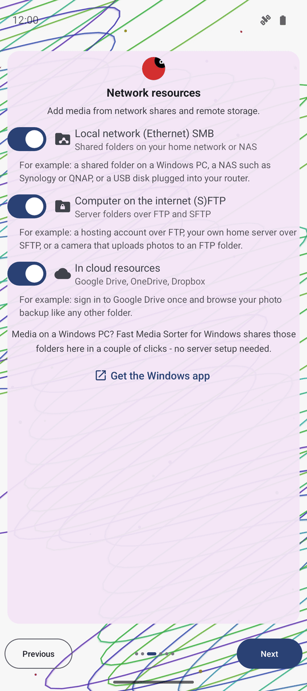
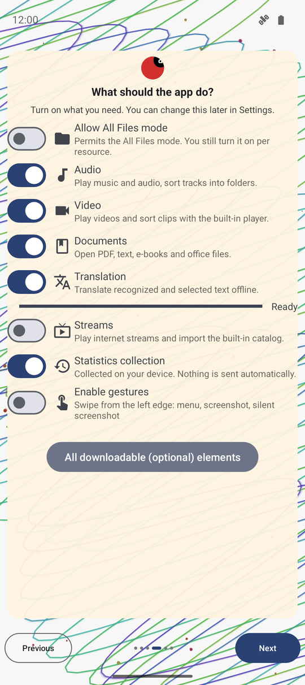
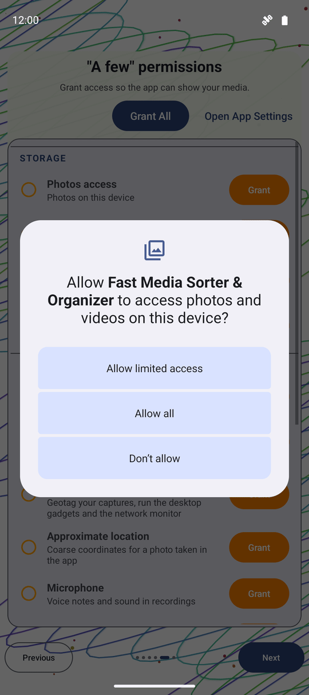
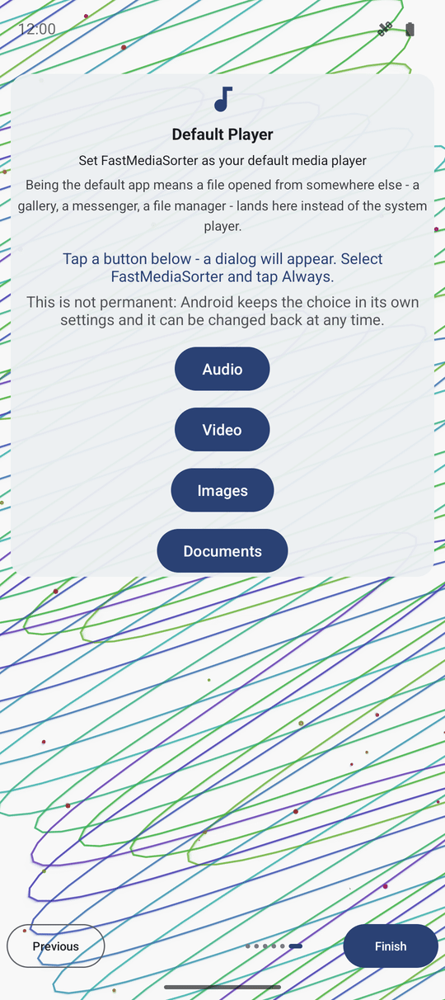
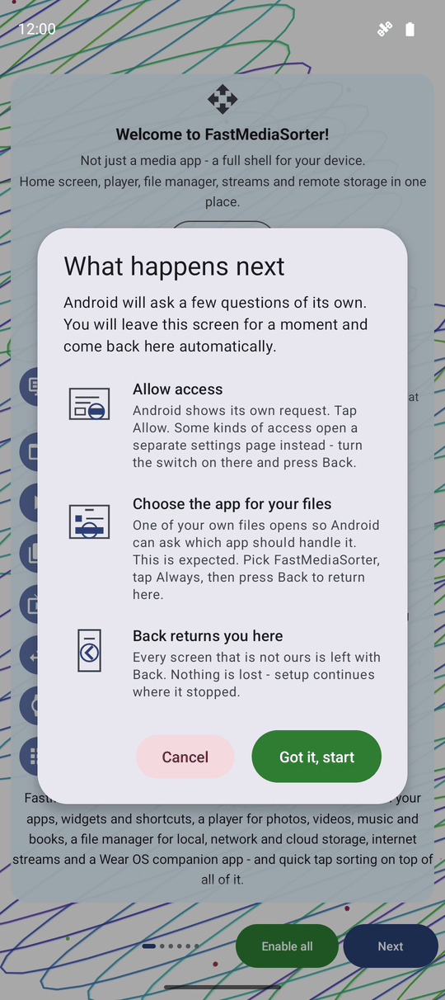

Мастер первого запуска и настройки
Мастер приветствия запускается один раз при первом открытии FastMediaSorter и последовательно проводит через выбор языка, темы, профиля устройства, сетевых и облачных папок, возможностей, системных разрешений и плеера по умолчанию — либо позволяет перейти сразу к финишу с помощью кнопки Включить всё на первом экране. Все сделанные настройки сохраняются в Настройках и легко меняются в будущем.
Почему вам это понравится
Первое знакомство с FastMediaSorter происходит лишь однажды, и эта первая минута ненавязчиво определяет ключевые вещи: на каком языке вы читаете интерфейс, видит ли приложение ваши сетевые диски и будет ли Android открывать ваши фото и видео в нём по умолчанию. Мастер приветствия создан для того, чтобы вы сделали этот выбор осознанно и за пару минут, а не натыкались на неожиданности потом.
Никакой выбор здесь не является окончательным. Любой параметр можно в любой момент изменить в Настройках, так что ошибиться невозможно — а если вам не хочется отвечать на вопросы мастера, одна кнопка наверху сделает почти всё за вас.
- ✓ Только что установленный FastMediaSorter в любой редакции — отображаемый набор страниц зависит от возможностей вашей сборки.
- ✓ Пара минут времени, а если вы планируете подключить сетевые или облачные папки — их адреса и данные для входа под рукой.
- ✓ Подключение к интернету при включении распознавания текста (OCR) или перевода — при активации этих функций скачиваются небольшие языковые модели.
Страница 1: знакомство с приложением, выбор языка и темы
Мастер открывается автоматически при первом запуске FastMediaSorter и остаётся активным, пока вы не завершите его или не нажмёте кнопку Включить всё. Ряд точек над нижними кнопками показывает общее число страниц и текущий прогресс; кнопки Назад и Далее позволяют перемещаться между шагами, а на последней странице вместо «Далее» появляется кнопка Готово. Каждая страница одинаково удобно управляется как сенсорным экраном, так и клавиатурой, пультом (D-pad) или колесом мыши — поэтому на ТВ-приставке или в автомобиле без тачскрина первоначальная настройка проходит столь же легко, как и на смартфоне.
На первой странице FastMediaSorter представляется через свои ключевые роли: Файловый менеджер («Просмотр, копирование, перемещение и удаление файлов»), карточка плеера с названием Медиаплеер (или Просмотр фото в сборке без поддержки видео и аудио), Любые источники, Быстрая сортировка и карточка Дополнительно. В сборках со встроенным лаунчером рабочего стола список возглавляет карточка Рабочий стол, а при наличии поддержки интернет-трансляций или приложения для часов для них появляются собственные карточки. Подзаголовок каждой карточки перечисляет только те форматы, протоколы и службы, которые реально поддерживаются вашей редакцией.
На этой же странице находятся ещё два элемента управления: кнопка выбора языка с отображением текущего и поиском по списку, а также переключатель цветовой темы (Авто / Светлая / Тёмная). Оба параметра вступают в силу мгновенно, позволяя оценить результат ещё до перехода к следующим шагам.

Если редакция предлагает сделать FastMediaSorter вашим домашним экраном (лаунчером) и вы отказываетесь, приложение надёжно запоминает этот выбор — оно больше не станет навязывать его ни здесь, ни при следующих открытиях настроек.
Страница 2: выбор типа устройства
FastMediaSorter спрашивает: «Как вы будете использовать это устройство?» и предлагает подборку карточек: Личный смартфон, Планшет и режим ПК, ТВ / медиаприставка, Автомобильное ГУ, Аудиоплеер, Видеоплеер, Электронная книга, Медиаплеер, Фоторамка, VR-гарнитура и Другое / Своё. Приложение уже выбрало наиболее подходящий вариант и отметило его значком (Рекомендуется) на основе распознанного оборудования — нажмите на другую карточку, если устройство используется иначе.
Выбранная карточка раскрывается и показывает своё полное описание, в то время как остальные аккуратно сжаты в одну строку, чтобы экран не превращался в бесконечный текст. Повторное нажатие на уже выбранную карточку подтверждает выбор и сразу переводит на следующий шаг — это эквивалентно нажатию кнопки Далее.
Переход дальше применяет весь готовый набор параметров выбранного профиля устройства, задавая настройки по умолчанию для всех последующих экранов. Выбор профилей ТВ / медиаприставка, Автомобильное ГУ или Фоторамка отключает автоматическое энергосбережение (поскольку такие устройства работают от постоянного питания), а профиль Фоторамка дополнительно отключает удаление свайпом влево, исключая случайное удаление снимков.

Страница 3: включение сетевых и облачных хранилищ
В редакциях Standard, Legacy, VR и noLegal далее следует страница Сетевые ресурсы: «Добавление медиафайлов из общих папок и удалённых хранилищ». Три переключателя позволяют включить или отключить целые группы источников, снабжённые наглядными примерами:
- Локальная сеть (Ethernet) SMB — «Общие папки в домашней сети или на NAS». Например, сетевая папка на ПК с Windows, сетевое хранилище Synology или QNAP, либо USB-диск, подключённый к роутеру.
- Компьютер в интернете (S)FTP — «Папки на серверах по протоколам FTP и SFTP». Например, хостинг по FTP, домашний сервер по SFTP или камера с автозагрузкой снимков на FTP.
- В облачных сервисах — «Google Диск, OneDrive, Dropbox». Например, однократный вход в Google Диск для просмотра резервных копий фото как обычной папки.
Каждый переключатель лишь разрешает отображение соответствующей категории — сами папки и учётные записи добавляются позже с главного экрана. В редакциях без облаков строка облачных сервисов отсутствует, а в сборках без сетевых функций эта страница пропускается целиком.

Программа Fast Media Sorter for Windows позволяет расшарить выбранные папки на ПК буквально в пару кликов без сложной настройки серверов — на этой странице есть прямая кнопка Скачать для Windows.
Страница 4: выбор возможностей приложения
«Что должно уметь приложение?» Включите нужные функции — все они могут быть скорректированы позже в настройках. Доступные переключатели: Режим «Все файлы» (разрешает отображение любых типов файлов; включается индивидуально для каждого ресурса), Аудио, Видео, Документы, Распознавание текста (OCR), Перевод, а в редакциях с поддержкой прямых трансляций — переключатель Трансляции для интернет-радио и ТВ-каналов с возможностью импорта встроенного каталога.
Включение OCR или Перевода не просто меняет тумблер: прямо на экране запускается фоновая загрузка компактного языкового модуля с индикатором прогресса в процентах, который сменяется на статус «Готово» или «Ошибка загрузки — нажмите для повтора». Сама функция активируется только после успешной установки модуля.
Ниже на странице расположен переключатель Сбор статистики (включён по умолчанию в редакциях Standard, Lite, Photos и Legacy) с примечанием: «Собирается только на устройстве. Никакие данные не отправляются наружу автоматически». Под ним в сборках Standard и noLegal находится пункт Включить жесты по левому краю экрана: свайп вверх открывает меню программ, вправо — делает скриншот и открывает редактор, вниз — делает снимок экрана в тихом режиме с коротким всплывающим сообщением.
Все доступные для загрузки дополнения можно просмотреть сразу: кнопка Все загружаемые (дополнительные) компоненты открывает менеджер расширений поверх мастера, позволяя выбрать и установить нужные плагины без сброса шагов настройки.

Страница 5: выдача системных разрешений
Страница разрешений наглядно показывает все типы доступа, которые запрашивает данная сборка, сгруппированные и описанные понятным языком, со статусом предоставления каждого пункта. Кнопка Разрешить все последовательно запрашивает стандартные права через общий диалог, а затем открывает специальные системные экраны Android по очереди; кнопка Открыть настройки приложения мгновенно переносит в системные свойства для ручной настройки.
Содержимое страницы динамически подстраивается под вашу редакцию и версию Android. Подробный разбор каждого разрешения и связанных с ним возможностей доступен в руководстве Разрешения и права доступа.

Страница 6: выбор в качестве плеера по умолчанию (только при первом запуске)
Если приложение ещё не назначено основным обработчиком файлов, появляется страница Плеер по умолчанию — «Сделать FastMediaSorter вашим основным медиаплеером». Четыре кнопки по типам контента — Аудио, Видео, Изображения, Документы — открывают системный выбор приложений Android: «Нажмите кнопку ниже — появится диалог. Выберите FastMediaSorter и нажмите Всегда».
На странице доступно объясняется, что это меняет: «Назначение приложением по умолчанию означает, что файл, открытый из галереи, мессенджера или проводника, откроется здесь, а не в стандартном плеере системы». И что это абсолютно безопасно: «Это не навсегда: Android хранит этот выбор в своих настройках, и его можно изменить в любой момент». После прохождения этой страницы или если приложение уже назначено по умолчанию, при повторных вызовах мастера этот шаг не появляется.

Быстрый старт — кнопка «Включить всё»
В редакциях Standard, Legacy, VR и noLegal на первой странице мастера рядом с индикатором страниц находится зелёная кнопка Включить всё. При нажатии открывается диалог «Что произойдёт дальше»: «Android задаст несколько собственных вопросов. Вы ненадолго перейдёте на другие экраны и автоматически вернётесь сюда». Диалог описывает три простых шага: Разрешить доступ («Android покажет свои запросы. Нажмите "Разрешить". Для некоторых прав откроется системная страница настроек — включите там тумблер и нажмите "Назад".»), Выбрать приложение для файлов («Откроется тестовый файл, чтобы Android спросил, чем его открывать. Выберите FastMediaSorter, нажмите "Всегда" и вернитесь назад.») и Кнопка "Назад" возвращает вас сюда («Из любых системных окон возвращайтесь кнопкой "Назад" — настройка продолжится с того же места.»). Нажмите Понятно, начать для продолжения или закройте диалог без изменений.
Подтверждение сначала открывает выбор профиля устройства из шага 2, чтобы скорректировать автоопределение при необходимости. После этого «Включить всё» активирует все функции, входящие в вашу редакцию (включая просмотр фото и GIF, а также все скомпилированные модули), не затрагивая параметры приватности, удаления файлов и пользовательские предпочтения. Также восстанавливаются все стандартные адресаты отправки меню «Отправить в..» (системное меню «Поделиться», «Открыть с помощью», «Печать», «Электронная почта», Google Keep и смарт-часы).
Перед этапом назначения плеером по умолчанию появляется короткое напоминание с кнопками Показать и Пропустить. Пропуск любого из напоминаний просто оставляет данный шаг ненастроенным, выполняя всю остальную автоматическую настройку.

Завершение настройки и первый экран
Нажмите кнопку Готово на последней странице, и мастер закроется. Только при самом первом запуске FastMediaSorter один раз автоматически откроет Настройки, за которыми уже будет ждать готовый главный экран — поэтому выход из настроек сразу приведёт вас на главный экран, а не обратно в мастер. В дальнейшем настройки никогда не открываются сами по себе.
Хотите изменить профиль устройства или заново переключить группы сетевых источников? Вы можете в любой момент запустить мастер заново из раздела «Настройки». Приложение предупредит вас перед запуском, так как повторное прохождение может перезаписать параметры, которые вы успели настроить вручную.
Что вы получите
Приложение говорит на вашем языке, оформлено в приятной вам теме, настроено под тип вашего устройства, видит выбранные сетевые и облачные папки и готово открывать поддерживаемые медиафайлы из других приложений. Любой параметр можно скорректировать в «Настройках», а мастер всегда доступен для повторного запуска.
Советы и решение проблем
- Функция «Включить всё» активирует компоненты надёжно. Модули распознавания текста и перевода остаются включёнными даже при одновременном завершении загрузки обоих языковых пакетов.
- Спешите? Кнопка «Включить всё» на первой странице отвечает почти на все вопросы мастера за вас и завершает настройку за считанные секунды (см. шаг 7 выше).
- Сбор статистики остаётся только на устройстве. Переключатель функциональности ведёт исключительно локальный и анонимный подсчёт — никакие данные не отправляются во внешнюю сеть.
- Сомневаетесь насчёт какого-то разрешения? Пропустите его сейчас. В руководстве по разрешениям подробно описаны все пункты, и любое право можно предоставить позже в настройках.
- Набор страниц зависит от редакции. Например, в редакции noLegal представлены все шаги этого руководства, тогда как в облегчённых сборках могут отсутствовать сетевой шаг или выбор плеера по умолчанию.